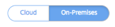
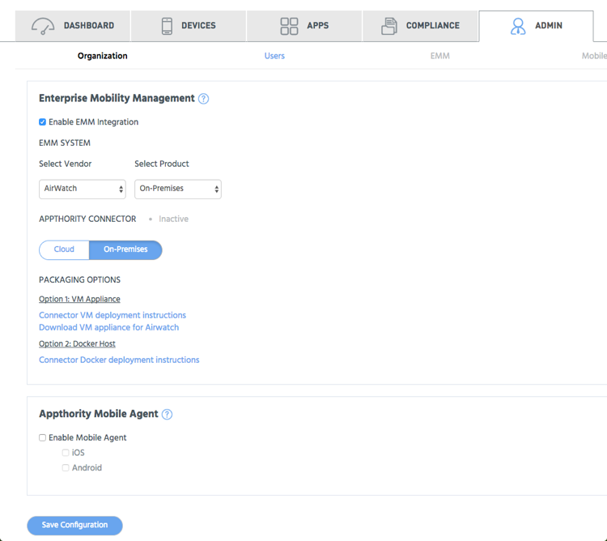

Use the on-premises option to deploy Appthority Connector in your datacenter and virtual server environment.
Tip: It is recommended that for your production environment, you should deploy a single Appthority Connector on a single virtual machine or Docker container. For staging or testing environments, you can deploy and configure multiple Connectors on a single virtual machine, or multiple Connector Docker containers, whichever you use.
Right-click and choose 'save link/target as' to download the PDF setup instructions for distribution to your IT or VM admin, who may not have access to this help.
Under Appthority Connector, click On-Premises.

Proceed to choose packaging.
